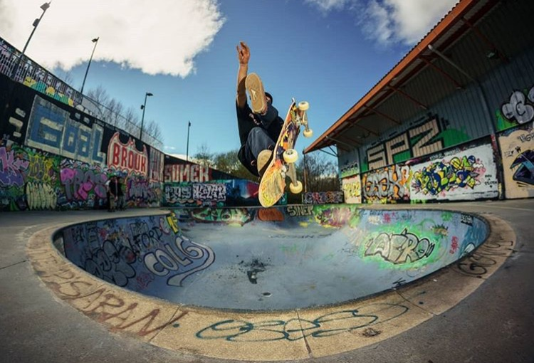

Rafa Vallespir, uno de lo mas ripers del panorama actual ?
Rafa Vallespir, uno de lo mas ripers del panorama actual ?
Rafa Vallespir, realiza un tour la zona norte de la península. Visitando así, algunos de losskateparks mas prestigiosos del panorama nacional. Le preguntamos ¿ Cual ha sido el mejor spot que has visitado?Nos responde; "El Skatepark mas loko de todos, el de Sondika sin duda".
¿ Puro Ripe ? Eso mismo pensaba yo.
Empezamos por el plato fuerte, donde Rafa Vallespir, puede ser el mas og de la rampa. Aquí la verdad es que nada más empezar a mirarle nos engorilatanto que todo el mundo la comienza a ripar. Creo que me quedo corto si os digo que es espectacular, ya lo era jaimito, pero esto es algo que cuando lo ves, ysabes que ya no hay vuelta atrás, el engorile te puede y la ripas de una compadre.
